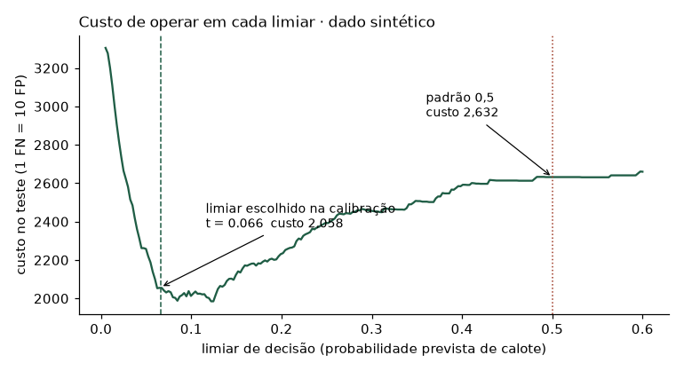
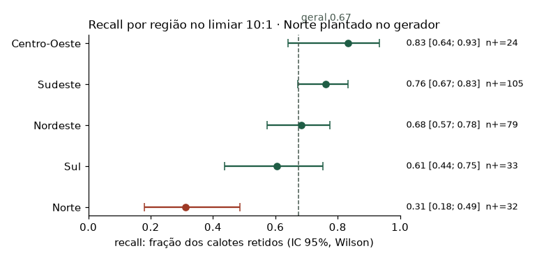
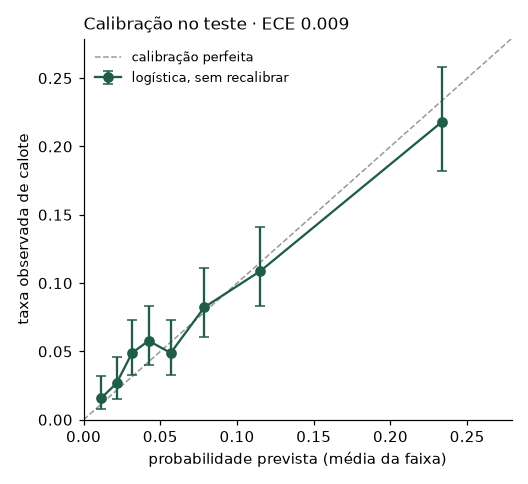

Modelo: regressão logística sobre 13 variáveis de solicitação de crédito
Autor: Matheus Rosa. Workshop da Residência em IA, feito em dupla; este repositório
é a minha reconstrução com dado sintético.
Dado sintético. Todos os números deste relatório vêm de 18.000 solicitações geradas por
src/gerar_dados.py(semente fixa). O efeito na região Norte foi plantado no gerador: lá o risco depende mais de um fator que não está no arquivo. O relatório mostra o método encontrando esse efeito; ele não descreve nenhum mercado real.
Decisão que este modelo apoia: triagem de solicitações de crédito.
Premissa declarada: este relatório trata a saída do modelo como negativa de crédito, que é a leitura mais severa. Se na prática ele só encaminha para análise humana, o custo de um falso positivo cai muito — de "a pessoa não recebe o crédito" para "a pessoa espera mais" — e a razão de custo da seção 4 muda junto. Confirmar antes de usar qualquer linha daquela tabela.
Quem é afetado por um erro: de um lado a pessoa que pede crédito; do outro o banco que empresta. Os dois lados aparecem na seção 2, com nome e consequência.
O teste representa a distribuição de produção? ☐ sim ☑ não ☐ não sabemos
O que faria essa suposição falhar:
Limiar operacional usado: t = 0,0660, derivado do custo (seção 4).
| Previsto INADIMPLENTE | Previsto PAGADOR | |
|---|---|---|
| Real INADIMPLENTE | VP = 184 | FN = 89 |
| Real PAGADOR | FP = 1168 | VN = 2159 |
Um falso positivo significa, na prática: uma pessoa que pagaria o empréstimo tem o crédito negado. Ela não faz a compra, a obra ou o capital de giro; o banco deixa de ganhar o juro daquele contrato. Aconteceu com 1168 das 3.327 pessoas boas do teste.
Um falso negativo significa, na prática: uma pessoa recebe um empréstimo que não vai conseguir pagar. O banco perde o principal, e ela entra numa dívida com negativação atrás. Aconteceu com 89 dos 273 inadimplentes.
| Métrica | Valor | Piso | Quem alcança o piso |
|---|---|---|---|
| Precisão | 0,136 | 0,076 | negar ao acaso |
| Recall | 0,674 | 0,000 | o modelo que nunca acusa ninguém |
| Especificidade | 0,649 | 1,000 | esse mesmo modelo, que deixa todos em paz |
| Balanced accuracy | 0,661 | 0,500 | acaso |
| MCC | 0,177 | 0,000 | acaso |
| AUPRC | 0,239 | 0,076 | acaso (= a prevalência) |
| AUC-ROC | 0,722 | 0,500 | acaso |
Métrica primária escolhida: recall, com precisão como restrição de operação.
Justificativa, ligada ao custo do erro: o falso negativo custa o principal do empréstimo; o falso positivo custa o juro de um contrato e o incômodo de uma pessoa. Enquanto o negócio não assinar a razão exata, a ordem de grandeza já é clara, e ela manda priorizar recall. A acurácia foi deliberadamente deixada de fora desta tabela: no limiar operacional ela cai para 0,6508, abaixo do piso de 0,9242 do modelo que não faz nada. Isso é esperado — a troca é de acurácia por detecção de caso raro — e é exatamente por isso que acurácia não serve para decidir aqui.
O que o modelo ganha de um baseline honesto. Todos medidos na calibração, que é onde a escolha foi feita — comparar AUPRC entre conjuntos diferentes não vale:
| Comparação | AUPRC na calibração | × o piso | AUPRC no próprio treino |
|---|---|---|---|
| chutar ao acaso | 0,076 | 1,0x | — |
| regra de uma coluna (score do bureau) | 0,205 | 2,7x | — |
| a logística | 0,287 | 3,8x | 0,249 |
| Random Forest | 0,242 | 3,2x | 1,000 |
| HistGradientBoosting | 0,242 | 3,2x | 0,562 |
A última coluna é o teste de memória: quando o modelo acerta muito melhor nas linhas que já viu do que nas que não viu, ele decorou em vez de aprender. O Random Forest chega a 1,000 no próprio treino e cai para 0,242 fora dele.
O que cada razão de custo produziria. É esta tabela, e não o número adotado, que sustenta a premissa: ela mostra o que muda se alguém discordar de 10:1. Limiar escolhido na calibração, resultado medido no teste:
| 1 FN vale | limiar | recall | precisão | pessoas negadas | calotes retidos |
|---|---|---|---|---|---|
| 5 FPs | 0,1930 | 0,256 | 0,285 | 246 (6,8%) | 70 de 273 |
| 10 FPs | 0,0660 | 0,674 | 0,136 | 1.352 (37,6%) | 184 de 273 |
| 20 FPs | 0,0560 | 0,714 | 0,122 | 1.596 (44,3%) | 195 de 273 |
| 50 FPs | 0,0250 | 0,941 | 0,093 | 2.761 (76,7%) | 257 de 273 |
| 100 FPs | 0,0150 | 0,982 | 0,083 | 3.220 (89,4%) | 268 de 273 |
| 200 FPs | 0,0150 | 0,982 | 0,083 | 3.220 (89,4%) | 268 de 273 |
Na última linha o modelo nega quase todo mundo: deixa de ser modelo e vira política de não emprestar. O limite superior útil da razão está bem antes disso.
ECE baixo, sozinho, não é mérito. O piso do ECE é zero, e quem o alcança é o modelo que devolve 7,58% para todo mundo e não detecta ninguém. ECE só significa alguma coisa ao lado de uma medida de ordenação, como a AUPRC.
| Cobertura | Respondidos | À revisão humana | Precisão | Recall | Calotes na fila |
|---|---|---|---|---|---|
| 100% | 3.600 | 0 | 0,136 | 0,674 | 0 de 273 |
| 98% | 3.528 | 72 | 0,139 | 0,679 | 5 de 273 |
| 95% | 3.420 | 180 | 0,141 | 0,685 | 13 de 273 |
| 90% | 3.240 | 360 | 0,143 | 0,685 | 25 de 273 |
| 80% | 2.880 | 720 | 0,154 | 0,701 | 42 de 273 |
A confiança foi medida como distância ao limiar operacional, não ao 0,5. A diferença não é técnica, é operacional: as duas listas de '10% mais incertos' têm 0 pessoa(s) em comum de 360. Usar o 0,5 mandaria para revisão as pessoas de maior risco, e não as que estão em cima do muro.
| Subgrupo | n | Positivos | Recall | IC 95% | Precisão | Alerta |
|---|---|---|---|---|---|---|
| Centro-Oeste | 275 | 24 | 0,833 | [0,641 , 0,933] | 0,190 | |
| Nordeste | 904 | 79 | 0,684 | [0,575 , 0,776] | 0,166 | |
| Norte | 382 | 32 | 0,312 | [0,180 , 0,486] | 0,077 | PIOR |
| Sudeste | 1.541 | 105 | 0,762 | [0,672 , 0,833] | 0,139 | |
| Sul | 498 | 33 | 0,606 | [0,437 , 0,753] | 0,092 | incerto |
| (geral) | 3.600 | 273 | 0,674 | [0,616 , 0,727] | 0,136 |
Decisão sobre o pior subgrupo. O Norte tem recall 0,312 contra 0,674 no agregado, e o intervalo de confiança do grupo não alcança o valor geral — a diferença não se explica por tamanho de amostra. Na prática, o mesmo modelo é dois produtos diferentes: no Sudeste ele retém 76% dos calotes, no Norte 31%. Note que a taxa de calote no Norte (8,4% no teste) é parecida com a geral: o problema não é haver mais calote lá, é o modelo ter menos evidência para separar quem paga de quem não paga. No dado sintético isso foi plantado de propósito; num dado real, a pergunta seguinte seria que informação falta para essa região? Isso é risco técnico e é risco jurídico. Enquanto não houver explicação, o Norte não deveria operar com decisão automática.
Nomear um subgrupo por intuição é onde mora o viés de quem escolhe. Aqui foram medidos todos os recortes que o arquivo permite, em duas perguntas que não são a mesma:
Só entra na lista quem tem o intervalo de 95% inteiro fora do valor geral:
| Recorte | Grupo | n | Recall | Negados | O quê |
|---|---|---|---|---|---|
| regiao | Norte | 382 | 0,312 | 34,0% | protege menos |
| regiao | Sul | 498 | 0,606 | 43,6% | barra mais |
| canal | Agência | 1.104 | 0,773 | 41,6% | barra mais |
| faixa de idade | 18-25 | 492 | 0,595 | 47,4% | barra mais |
| faixa de renda | renda Q1 | 900 | 0,772 | 44,2% | barra mais |
| faixa de renda | renda Q4 | 900 | 0,542 | 30,6% | protege menos |
| faixa de score | score Q1 | 904 | 0,924 | 85,8% | barra mais |
| faixa de score | score Q2 | 899 | 0,657 | 45,1% | barra mais |
| faixa de score | score Q3 | 908 | 0,319 | 14,8% | protege menos |
| faixa de score | score Q4 | 889 | 0,143 | 4,2% | protege menos |
| garantia | sem imovel | 2.505 | 0,682 | 42,0% | barra mais |
| prazo | 60x | 347 | 0,650 | 47,0% | barra mais |
| atrasos em 12m | 0 atraso(s) | 2.559 | 0,564 | 29,2% | protege menos |
| atrasos em 12m | 1 atraso(s) | 869 | 0,778 | 53,3% | barra mais |
| atrasos em 12m | 2 atraso(s) | 154 | 1,000 | 79,9% | barra mais |
| (geral) | — | 3.600 | 0,674 | 37,6% |
Como ler a tabela.
| Lacuna | Risco que ela representa | Responsável | Prazo |
|---|---|---|---|
| A razão de custo 10:1 é premissa declarada, derivada e não medida | se a razão real for outra, o limiar muda; a tabela da seção 4 mostra quanto | risco de crédito, num banco | antes do piloto |
| A amostra é a população aprovada (reject inference) | o modelo nunca viu quem foi negado, e vai pontuar essas pessoas | quem entregou o dado | antes do piloto |
| Não há coluna de data | sem validação temporal, sem deriva, sem safra | quem entregou o dado | antes do piloto |
| Recall do Norte é 46% do geral | mesmo modelo, dois produtos; risco jurídico | modelagem + jurídico | antes de ligar no Norte |
| Ninguém designado para revisar abstenções | a política de abstenção fica no papel | operação | antes de ligar a abstenção |
| O dado é sintético | os números demonstram o método, não estimam nada real | modelagem | antes de qualquer uso |
| O ganho sobre olhar só o score do bureau é de 0,082 de AUPRC | talvez não valha manter um modelo em produção | modelagem | antes do piloto |
| A calibração serviu a três decisões (escolher modelo, calibrar, escolher limiar) | o limiar pode estar levemente sobreajustado | modelagem | próxima iteração |
Um relatório sem nenhuma lacuna é sinal de que ninguém olhou com atenção suficiente.
☐ Pronto para produção · ☐ Produção com revisão humana · ☑ Piloto restrito · ☐ Não recomendado
PILOTO RESTRITO: nem produção, nem arquivo morto.
Em duas frases: o modelo ordena risco acima do acaso, chega calibrado e opera num limiar derivado do custo — mas no Norte ele retém 31% dos calotes contra 67% no agregado, e a amostra só contém quem já teve crédito aprovado. Ligar em produção hoje seria automatizar decisão de crédito num grupo onde o modelo comprovadamente funciona pior, com uma base que não representa quem vai ser pontuado.
O que destrava a aprovação, em ordem: (1) explicação ou correção do Norte; (2) confirmação de como o dado foi amostrado, e do que acontece com quem hoje é negado; (3) alguém com mandato de negócio revisando a razão de custo adotada; (4) se a abstenção for ligada um dia, uma pessoa designada para a fila.
O que não trava a decisão: a razão de custo. Ela é premissa declarada, com a conta que a produziu e a sensibilidade ao lado. E a recomendação não depende dela: o achado do Norte foi testado em todos os 8 cenários da tabela da seção 4, e a diferença se sustenta em 6 deles, de 5:1 a 200:1. Ela só fica inconclusiva em 1:1, 2:1, onde o modelo quase não encontra inadimplente em lugar nenhum e não sobra diferença para medir.


